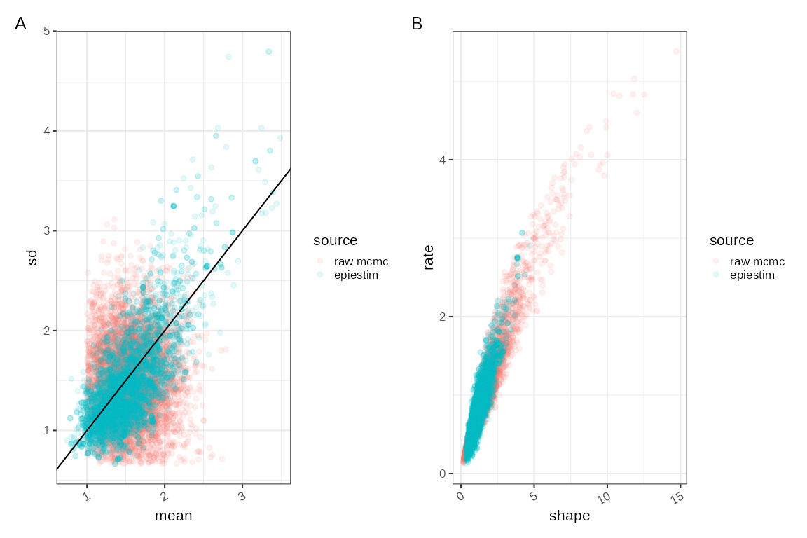
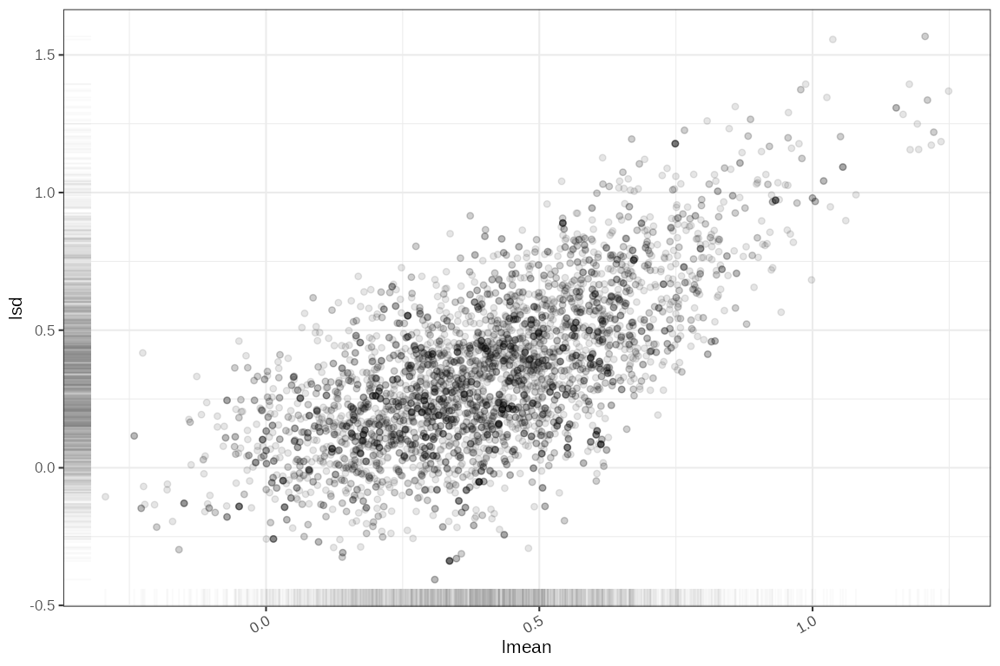
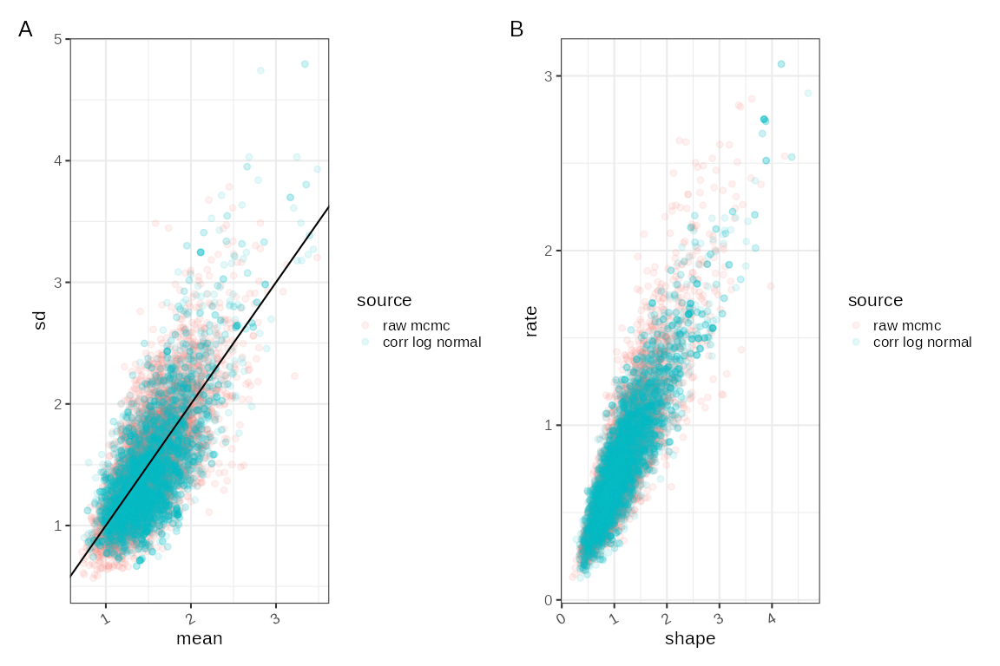
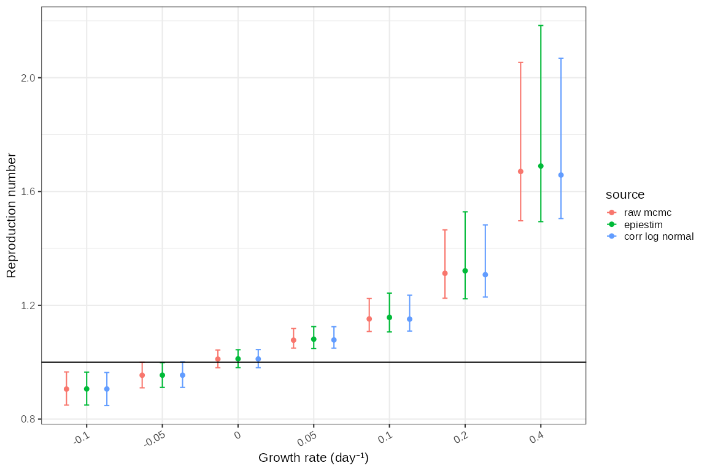
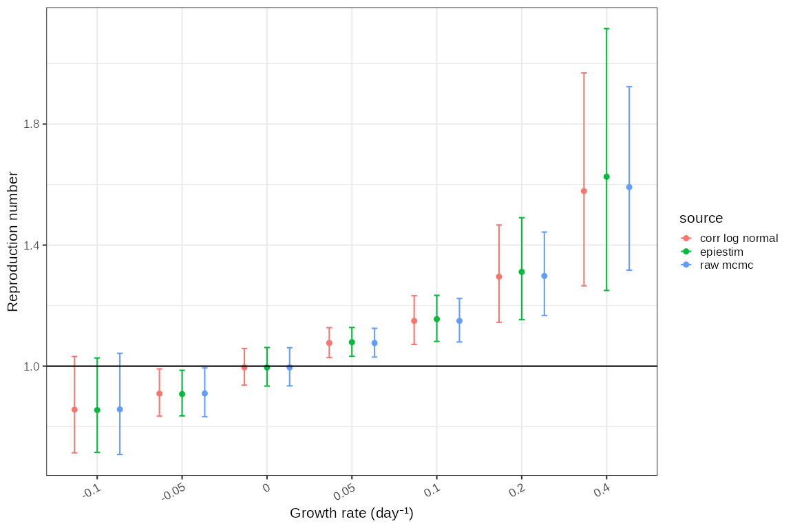

Sampling the infectivity profile from published serial interval estimates
Source:vignettes/sampling-serial-interval.Rmd
sampling-serial-interval.RmdThe infectivity profile is commonly modelled from contact tracing data where onset of symptoms in infector-infectee pairs is known, or where infection time can be estimated by known constraints in exposure such as travellers to and from an outbreak. Serial interval estimates that measure time from symptom onset of infector to time of symptom onset of infectee are an imperfect proxy for infectivity profile but are usually adequate in the early phases of an epidemic when better data is sparse.
In practice we often use serial interval data from the literature to approximate the infectivity profile. In this case random samples must be drawn from the parameters published in the literature and the infectivity profile distributions reconstructed. There is the potential for bias to be introduced in this process which is investigated here.
Estimation of the infectivity profile is usually done by fitting a
doubly censored survival model with an underlying gamma probability
distribution to data and can be done with MCMC using
EpiEstim. In this case we demonstrate this with a mock
Rotavirus dataset from EpiEstim:
clever_init_param <- EpiEstim::init_mcmc_params(si_data, "G")
SI_fit_clever <- coarseDataTools::dic.fit.mcmc(dat = si_data,
dist = "G", # Gamma distribution
init.pars = clever_init_param,
burnin = 1000,
n.samples = 5000,
verbose = 10000)## Running 6000 MCMC iterations
## MCMCmetrop1R iteration 1 of 6000
## function value = -31.57675
## theta =
## 0.13231
## 0.29055
## Metropolis acceptance rate = 0.00000
##
##
##
## @@@@@@@@@@@@@@@@@@@@@@@@@@@@@@@@@@@@@@@@@@@@@@@@@@@@@@@@@
## The Metropolis acceptance rate was 0.55817
## @@@@@@@@@@@@@@@@@@@@@@@@@@@@@@@@@@@@@@@@@@@@@@@@@@@@@@@@@
SI_fit_clever## Coarse Data Model Parameter and Quantile Estimates:
## est CIlow CIhigh
## shape 1.133 0.471 2.535
## scale 1.306 0.548 3.559
## p5 0.103 0.004 0.382
## p50 1.080 0.501 1.726
## p95 4.222 2.749 7.757
## p99 6.392 3.936 12.717
## Note: please check that the MCMC converged on the target distribution by running multiple chains. MCMC samples are available in the mcmc slot (e.g. my.fit@mcmc)The median estimate and confidence intervals are quantiles of the posterior samples each of which define a candidate gamma distribution. The density of a subset of these are plotted here.
# The sample quantiles
# apply(SI_fit_clever@samples,MARGIN = 2,FUN = quantile, p=c(0.5,0.025,0.975))
gammas = SI_fit_clever@samples %>%
dplyr::transmute(
rate = 1/var2,
shape = var1,
scale=var2,
mean = var1*var2,
sd = sqrt(var1)*var2,
lmean = log(mean),
lsd = log(sd))
max_x = ceiling(stats::quantile(stats::qgamma(0.95, gammas$shape, gammas$rate),0.75))
if (is.null(si_distr)) si_distr = EpiEstim::discr_si(0:max_x, stats::quantile(gammas$mean, 0.5), stats::quantile(gammas$sd, 0.5))
ggplot2::ggplot()+
purrr::pmap(gammas %>% utils::tail(200),
function(shape,rate,...) {
ggplot2::geom_function(fun = function(x) stats::dgamma(x, shape=shape, rate=rate), alpha=0.05, xlim=c(0,max_x))
}
)+
ggplot2::ylab("density")
In many cases we will want to estimate the infectivity profile from published literature. Typically a serial interval analysis will publish a summary of the parameters of these posteriors which might include statistics as follows:
gammas %>%
dplyr::select(mean, sd) %>%
tidyr::pivot_longer(cols=dplyr::everything()) %>%
dplyr::group_by(parameter = name) %>%
dplyr::summarise(
mean = sprintf("%1.2f", mean(value)),
sd = sprintf("%1.2f", stats::sd(value)),
`median [95% CrI]` = sprintf("%1.2f [%1.2f \u2014 %1.2f]",
stats::quantile(value, p=0.5),
stats::quantile(value, p=0.025),
stats::quantile(value, p=0.975))
)## # A tibble: 2 × 4
## parameter mean sd `median [95% CrI]`
## <chr> <chr> <chr> <chr>
## 1 mean 1.54 0.37 1.51 [0.96 — 2.38]
## 2 sd 1.49 0.49 1.38 [0.83 — 2.75]In many cases it will only be the median and 95% credible intervals that are published, and in some cases not even that. In very rare cases posterior estimates of shape and scale parameters of the gamma distribution may be published.
EpiEstim can use these published estimates including
credible intervals to infer a set of samples of the mean and SD of the
the infectivity profile distribution. This is done using independent
sampling from a truncated normal distribution for both mean and SD. It
is not enforced, but assumed that the selected values for the mean are
larger than 1.
To perform resampling EpiEstim uses the mean and SD of
each of the mean and SD parameters of the infectivity profile
distributions (and not the medians). There is a potential for confusion
here and also as there is sometimes a lack of clarity about whether a
serial interval study is publishing a mean of the mean, or a median of
the mean, there is a risk of incorrectly interpreting published
values.
summary = gammas %>%
dplyr::select(mean, sd) %>%
tidyr::pivot_longer(cols=dplyr::everything()) %>%
dplyr::group_by(parameter = name) %>%
dplyr::summarise(
mean = mean(value),
sd = stats::sd(value),
min = min(value),
max = max(value)
)
config = list(
mean_si = summary$mean[1], std_mean_si = summary$sd[1],
min_mean_si = max(c(1,summary$min[1])), max_mean_si = summary$max[1],
std_si = summary$mean[2], std_std_si = summary$sd[2],
min_std_si = max(c(summary$min[2],0)), max_std_si = summary$max[2], n1 = 5000
)
# The following code is copied from EpiEstim:
mean_si_sample <- rep(-1, config$n1)
std_si_sample <- rep(-1, config$n1)
for (k in seq_len(config$n1)) {
while (mean_si_sample[k] < config$min_mean_si ||
mean_si_sample[k] > config$max_mean_si) {
mean_si_sample[k] <- stats::rnorm(1, mean = config$mean_si,
sd = config$std_mean_si)
}
while (std_si_sample[k] < config$min_std_si ||
std_si_sample[k] > config$max_std_si) {
std_si_sample[k] <- stats::rnorm(1, mean = config$std_si,
sd = config$std_std_si)
}
}
epiestim_si_samples = dplyr::tibble(
mean = mean_si_sample,
sd = std_si_sample
) %>% dplyr::mutate(
shape = mean^2/sd^2,
scale = sd^2/mean,
rate = 1/scale,
lmean = log(mean),
lsd = log(sd)
)In many cases this strategy gives a very good fit to the original
mcmc estimates, but due to the properties of the gamma distribution, if
the standard deviation is larger than the mean, the shape parameter is
smaller than 1 and the resulting gamma distribution is heavily left
skewed and more closely resembles an exponential distribution with a
probability density at zero which is non-zero. In MCMC sampling these
solutions are generally found to be inconsistent with the data and are
rejected. As a result posterior gamma distribution estimates will have a
correlation between mean and standard deviation when the standard
deviation approaches the mean. EpiEstims re-sampled mean
and SD do not represent the underlying data distribution very accurately
in this instance.
comparison = dplyr::bind_rows(
epiestim_si_samples %>% dplyr::mutate(source="epiestim"),
gammas %>% dplyr::mutate(source = "raw mcmc")
) %>% dplyr::mutate(source = factor(source,labels = c("raw mcmc","epiestim")))
p1 = ggplot2::ggplot(comparison)+
ggplot2::geom_point(mapping=ggplot2::aes(x=mean,y=sd,colour=source), alpha = 0.1)+
ggplot2::geom_abline()
p2 = ggplot2::ggplot(comparison)+
ggplot2::geom_point(mapping=ggplot2::aes(x=shape,y=rate,colour=source),alpha=0.1)
p1+p2+patchwork::plot_annotation(tag_levels = "A")
# ggplot2::ggplot()+
# purrr::pmap(epiestim_si_samples %>% utils::tail(200),
# function(shape,rate,...) {
# ggplot2::geom_function(fun = function(x) stats::dgamma(x, shape=shape, rate=rate), alpha=0.05, xlim=c(0,max_x))
# }
# )+
# ggplot2::ylab("density")#+Alternative resampling
The mean and SD of the gamma distribution are both modelled in
EpiEstim as independent truncated normally distributed
quantities, and it is assumed we know the mean, sd, and lower and upper
bounds for this distribution. This assumption breaks down when the SD of
the gamma distributions is close to the mean, as there is correlation
between the SD and mean.
An alternative assumption is that the mean and SD of the infectivity profile gamma distributions are correlated log-normal distributed quantities. In this case we see that the results of MCMC fitting do seem to be correlated on a log scale and are feasible normally distributed.
# They are a correlated approximately lognormal distributed quantity
ggplot2::ggplot(gammas,ggplot2::aes(x=lmean,y=lsd))+ggplot2::geom_point(alpha=0.1)+ggplot2::geom_rug(alpha=0.02)
correlation = stats::cor(gammas$mean, gammas$sd)
correlation## [1] 0.7331017Let us also assume that rather than knowledge of mean, sd, etc, we know only median and 95% credible intervals of the distribution of mean and SD, which are more commonly what is reported in the literature. For the time being we also assume we know the degree of correlation.
# However typically we will be provided with quantiles of mean and SD
# We can log transform quantiles and estimate a normal distribution
# on the log scale.
quantiles = gammas %>%
dplyr::select(mean, sd) %>%
dplyr::reframe(dplyr::across(dplyr::everything(), ~ stats::quantile(p=c(0.025,0.5,0.975),.x))) %>% dplyr::mutate(p=c(0.025,0.5,0.975))
quantiles %>% dplyr::glimpse()## Rows: 3
## Columns: 3
## $ mean <dbl> 0.9639519, 1.5100723, 2.3842426
## $ sd <dbl> 0.8333187, 1.3802986, 2.7504063
## $ p <dbl> 0.025, 0.500, 0.975
# We can log transform quantiles and estimate a normal distribution
# on the log scale.
quantiles = quantiles %>% dplyr::mutate(lmean = log(mean), lsd = log(sd), z = stats::qnorm(p))
# this linear model fits a (log)normal distribution to provided quantiles.
# lm coefficients - intercept is mean and z gradient is sd.
lmMean = stats::lm(formula = lmean~z, quantiles)$coeff
lmSd = stats::lm(formula = lsd~z, quantiles)$coeff
# means here is mean of mu=log(mean) and mean of sigma=log(sd)
means2 = c(lmMean[1],lmSd[1])
names(means2) = c("lmean","lsd")
# sds here is sd of mu=log(mean) and sd of sigma=log(sd)
sds2 = c(lmMean[2],lmSd[2])
names(sds2) = c("lmean","lsd")
.cor2cov = function(correlation, sds) {
corMatrix = matrix(c(1,correlation,correlation,1),nrow = 2)
covMatrix2 = diag(sds) %*% corMatrix %*% diag(sds)
colnames(covMatrix2) = names(sds)
rownames(covMatrix2) = names(sds)
return(covMatrix2)
}
covMatrix2 = .cor2cov(correlation, sds2)
simulated2 = MASS::mvrnorm(n=5000, mu=means2, Sigma = covMatrix2) %>% as.data.frame()
simulated2 = simulated2 %>% dplyr::mutate(mean = exp(lmean), sd = exp(lsd), shape = (mean^2)/(sd^2), rate = mean/(sd^2))This re-sampling process produces a closer set of distributions than
the EpiEstim approach, but does assume we can estimate the
correlation between mean and SD.
comparison2 = dplyr::bind_rows(
simulated2 %>% dplyr::mutate(source="corr log normal"),
gammas %>% dplyr::mutate(source = "raw mcmc")
) %>% dplyr::mutate(source = factor(source,labels = c("raw mcmc","corr log normal")))
p1 = ggplot2::ggplot(comparison2)+
ggplot2::geom_point(mapping=ggplot2::aes(x=mean,y=sd,colour=source), alpha = 0.1)+
ggplot2::geom_abline()
p2 = ggplot2::ggplot(comparison2)+
ggplot2::geom_point(mapping=ggplot2::aes(x=shape,y=rate,colour=source),alpha=0.1)
p1+p2+patchwork::plot_annotation(tag_levels = "A")
These distributions are a better fit for those derived from the
original data than the sampling strategy from EpiEstim but
they do produce some resampled distributions that are incompatible with
the discretisation strategy in EpiEstim as they have a mean
< 1. These samples would have to be excluded to allow them to be used
with the Cori method.
Does this make any difference?
comparison = dplyr::bind_rows(
epiestim_si_samples %>% dplyr::mutate(source="epiestim"),
simulated2 %>% dplyr::mutate(source="corr log normal"),
gammas %>% dplyr::mutate(source = "raw mcmc")
)
original_disc = comparison %>%
dplyr::filter(mean > 1) %>%
dplyr::group_by(source) %>%
dplyr::transmute(
coll = dplyr::row_number(),
disc = purrr::map2(mean,sd, ~ dplyr::tibble(
x=0:50,
p = EpiEstim::discr_si(0:50, .x, .y))),
disc_type = "discr_si"
) %>% tidyr::unnest(disc)
tmp = original_disc %>% dplyr::mutate(source=factor(source, levels = c("raw mcmc","epiestim","corr log normal")))
sources = length(levels(tmp$source))
tmp_summ = tmp %>% dplyr::group_by(source,x) %>% dplyr::summarise(p = mean(p))## `summarise()` has grouped output by 'source'. You can override using the
## `.groups` argument.
tmp_mean = tmp %>% dplyr::group_by(source,coll) %>%
dplyr::summarise(mean = sum(x*p)) %>%
dplyr::summarise(sd = stats::sd(mean),mean = mean(mean), parameter="mean", disc_type="epiestim") %>%
dplyr::bind_rows(
gammas %>% dplyr::summarise(sd = stats::sd(mean),mean=mean(mean), parameter="mean",source="raw",disc_type="none" )
)## `summarise()` has grouped output by 'source'. You can override using the
## `.groups` argument.
ggplot2::ggplot(tmp)+
ggplot2::geom_segment(mapping=ggplot2::aes(x=x+as.numeric(source)/sources-1/sources,xend=x+as.numeric(source)/sources,y=p, colour=source), alpha=0.01)+
ggplot2::geom_segment(data = tmp_summ, mapping=ggplot2::aes(x=x+as.numeric(source)/sources-1/sources,xend=x+as.numeric(source)/sources,y=p), colour="black")+
ggplot2::xlab("time")+
ggplot2::coord_cartesian(xlim=c(0,max_x+1))+
ggplot2::guides(colour = ggplot2::guide_legend(override.aes = list(alpha = 1)))
tmp_mean## # A tibble: 4 × 5
## source sd mean parameter disc_type
## <chr> <dbl> <dbl> <chr> <chr>
## 1 raw mcmc 0.360 1.57 mean epiestim
## 2 epiestim 0.330 1.60 mean epiestim
## 3 corr log normal 0.349 1.57 mean epiestim
## 4 raw 0.375 1.54 mean noneEpiEstim’s default resampling strategy in this example
results in a slightly less skewed discretised infectivity profile
distribution than either the original data derived
(raw mcmc) or log-normally resampled with correlation
(corr log normal). The result of this can be examined by
looking at EpiEstim estimates of the reproduction number
using each of the different infectivity profiles. We simulate an
artificial incidence time series for each of a set of growth rates and
use EpiEstim to produce reproduction number estimates for
each of these synthetic timeseries using either the data-derived
infectivity profiles (raw mcmc), EpiEstim
resampled infectivity profiles (epiestim), and correlated
log-normal resampled infectivity profiles
(corr log normal):
r = c(0.4,0.2,0.1,0.05,0,-0.05,-0.1)
# select a shorter list of samples
tmp2 = tmp %>% dplyr::group_by(source) %>% dplyr::reframe(
si_matrix = list(matrix(as.vector(p),nrow=51)[,1:250]),
r = list(r)
) %>% tidyr::unnest(r)
# tmp2$si_matrix[[1]][1:10,1:10]
compare_R = tmp2 %>% dplyr::mutate(R = purrr::map2(si_matrix, r, ~ {
ts = dplyr::tibble(
t = 0:50
) %>% dplyr::mutate(
I = 100*exp(.y*t)
)
return(EpiEstim::estimate_R(ts,
method="si_from_sample", si_sample = .x,
config = EpiEstim::make_config(t_start=2, t_end = 50))$R)
})
)## Warning: There were 21 warnings in `dplyr::mutate()`.
## The first warning was:
## ℹ In argument: `R = purrr::map2(...)`.
## Caused by warning:
## ! Unknown or uninitialised column: `dates`.
## ℹ Run `dplyr::last_dplyr_warnings()` to see the 20 remaining warnings.
ggplot2::ggplot(compare_R %>% tidyr::unnest(R))+
ggplot2::geom_point(ggplot2::aes(x=as.factor(r), colour=source, y=`Median(R)`), position=ggplot2::position_dodge(width=0.8))+
ggplot2::geom_errorbar(ggplot2::aes(x=as.factor(r), colour=source, ymin=`Quantile.0.025(R)`, ymax=`Quantile.0.975(R)`), position=ggplot2::position_dodge(width=0.8), width=0.2)+
ggplot2::xlab("Growth rate (day⁻¹)")+
ggplot2::ylab("Reproduction number")+
ggplot2::geom_hline(yintercept=1)
Compared to reproduction number estimates from the mcmc
originals, epiestim and re-sampling using correlated
log-normals are very similar. To produce the correlated log-normals we
are assuming knowledge of the correlation between mean and SD, which is
not usually specified in published data.
Conclusion
There is an assumption made in EpiEstim that uncertainty
in infectivity profile distributions, can be specified as the mean, SD,
upper and lower limit of truncated normal distributions which in turn
define the mean and SD of a gamma distribution. This gamma distribution
is discretised using the PDF of the gamma distribution offset by 1 day.
This requires a lower bound for the mean of 1 day.
Changing these assumptions and instead specifying the parameters of the gamma distribution as a pair of correlated log normally distributed quantities gives a qualitatively better fit to the original distribution. This does not, however, affect reproduction number estimation, and assumes knowledge of the correlation between mean and SD of the gamma distribution.
We find no evidence that there is benefit in changing the resampling
procedure from that used in EpiEstim, but care must be
taken to ensure that the resampling algorithm is given the correct
parameters. Published serial interval estimates are often given as the
median and 95% credible intervals of distribution mean and SD parameters
which is not what EpiEstim expects.
Any reproduction number estimation using EpiEstim is
subject to the constraint that the infectivity at time zero is zero.
Coupled with discretisation this is another potential source of bias
that can only be investigated using a different reproduction number
framework.
Addendum
It is possible that the left truncation that is inherent in
EpiEstim discretisation and
estimation is hiding an effect so we repeated the analysis. This time we
make infectivity profiles from posterior samples or from resampled of
summarised parameters from EpiEstim and using the
correlated log-normal method described here but using a different
discretisation framework, and estimate
using a method that does not require that the probability of infection
at time 0 is zero. The result is more or less the same - although we
could possibly argue in this case that the EpiEstim
re-sampling procedure has resulted in more uncertainty at higher growth
rates, but in this analysis using correlated log-normal resampling does
not make a huge improvement.
comparison2 = dplyr::bind_rows(
do.call(make_posterior_ip, gammas %>% dplyr::select(shape,rate)) %>% dplyr::mutate(source="raw mcmc"),
do.call(make_posterior_ip, simulated2 %>% dplyr::select(shape,rate)) %>% dplyr::mutate(source="corr log normal"),
do.call(make_posterior_ip, epiestim_si_samples %>% dplyr::select(shape,rate)) %>% dplyr::mutate(source="epiestim")
) %>% tidyr::nest(ip = -source)
tmp3 = dplyr::tibble(r = r) %>%
dplyr::mutate(
data = purrr::map(r, ~ {
dplyr::tibble(
time = 0:30,
count = stats::rpois(0:30, 100*exp(.x*0:30))
)}
)) %>%
dplyr::cross_join(comparison2) %>%
dplyr::mutate(fit = purrr::map2(data,ip, ~
.x %>%
poisson_locfit_model() %>%
rt_from_incidence(ip = .y)
)
)## Rt from incidence: assuming independence and approximating quantiles.
## (N.B. this message will only be displayed once.)
tmp4 = tmp3 %>% dplyr::select(-ip) %>% tidyr::unnest(fit) %>% dplyr::filter(time>10) %>%
dplyr::group_by(source,r) %>%
dplyr::summarise(
rt.0.025 = mean(rt.0.025),
rt.0.5 = mean(rt.0.5),
rt.0.975 = mean(rt.0.975)
)## `summarise()` has grouped output by 'source'. You can override using the
## `.groups` argument.
ggplot2::ggplot(tmp4)+
ggplot2::geom_point(ggplot2::aes(x=as.factor(r), colour=source, y=rt.0.5), position=ggplot2::position_dodge(width=0.8))+
ggplot2::geom_errorbar(ggplot2::aes(x=as.factor(r), colour=source, ymin=rt.0.025, ymax=rt.0.975), position=ggplot2::position_dodge(width=0.8), width=0.2)+
ggplot2::xlab("Growth rate (day⁻¹)")+
ggplot2::ylab("Reproduction number")+
ggplot2::geom_hline(yintercept=1)